Integrated progress on startup
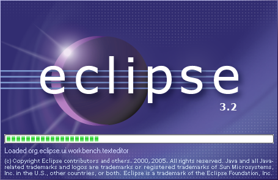
Problems, Tasks and Bookmarks view supports multiple filters
It is now possible to define more than one filter on the problems, tasks, and bookmarks views. These filters are additive so the view will show the union of the markers that satisfy these filters.
You can add, remove, enable, or disable filters as desired.
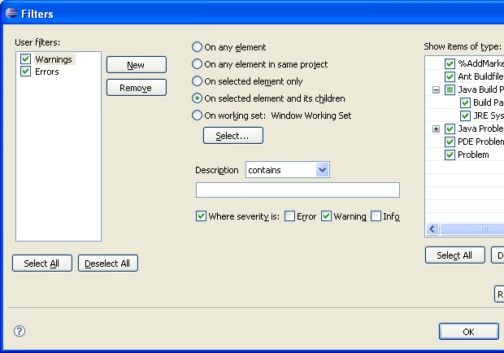
Marker Limits moved to preferences
Marker Limits are now applied to all filters rather than defined one per filter.
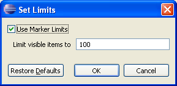
Categorization added to Import and Export
The Import and Export wizards now support categorization.

Improved hyperlink navigation
Hyperlink navigation is now also available if the editor does not have focus.
Window-level working set selection
The notion of window-level working set selection has been introduced. By default, there is a "Working Sets" action in the window tool bar that allows you to select an arbitrary selection of working sets.
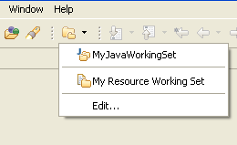
Any view that is set to use the "Window Working Set" (via the traditional selection dialog) will show the contents of all selected working sets.
Filtering in Show view dialog
The Show View dialog now provides filtering of what views appear in the list based on text provided by the user. This is the same feature that already exists in the Preferences dialog.
 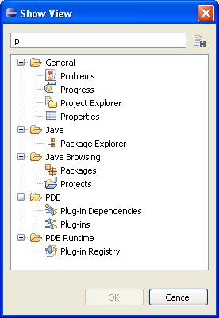
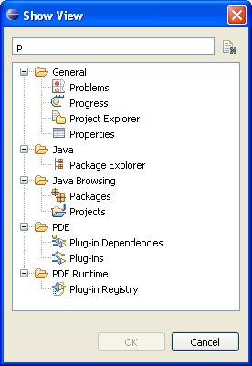
Import Existing Projects with copy
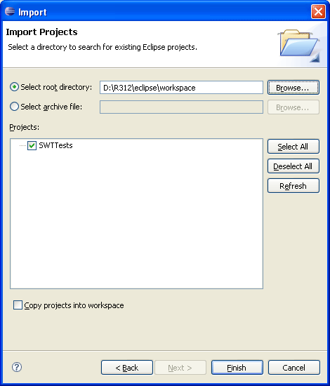
Draggable window trim
The window 'trim' (that is, Status Line, Heap Status, Fast View Bar...) can now be repositioned around the workbench window. Each trim element has its own grab handle that you can either click and drag to move the trim or right-click to get a context menu.
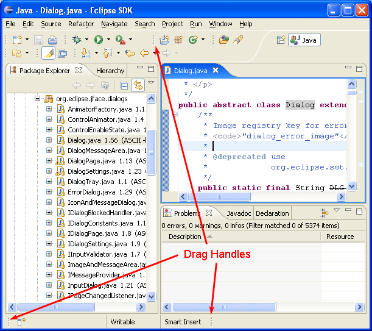
Problems View filters are tied to the Window Working Set by default when they are created. The user does not have to update the Problems view when they set up their working sets if default settings are used. If there are no working sets, the filter is applied to all elements.
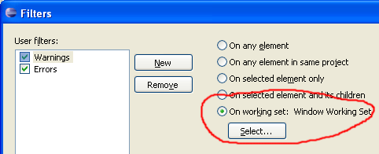
Filtering in Import, Export, and New wizards
The Import, Export, and New wizards now provide filtering of wizards that appear in the list based on the entered filter text. This is the same feature that already exists in the Preferences and Show View dialogs.
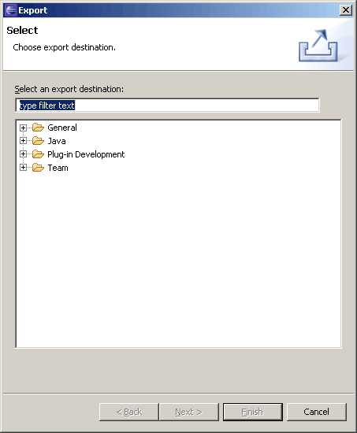
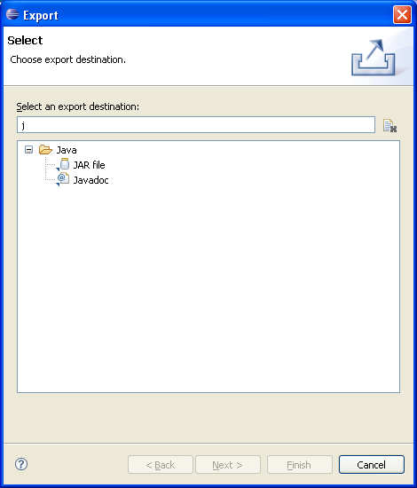
Linked resources anywhere
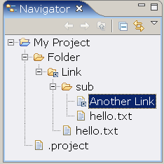
Install/Update enhancements
Mac OS X on X86/Intel
The Eclipse launcher and native libraries have been compiled as universal binaries so that you can run Eclipse on Mac OS X X86/Intel platforms using the Mac OS X (Mac/Carbon) downloads.
Alternative file systems
Projects and linked resources can now be created with file systems other than the local file system.

Problems can be grouped
Problems in the Problems view can now be grouped by severity, type, or other criteria provided by plug-ins.
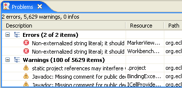
Multiple problems can be fixed at once
The Problems view now allows you to add other problems that have the same potential resolution so that you may fix many at once.
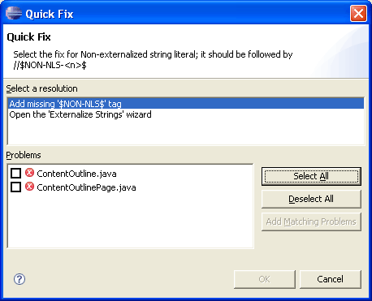
Close unrelated projects
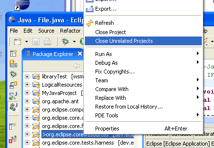
Improved help in dialogs
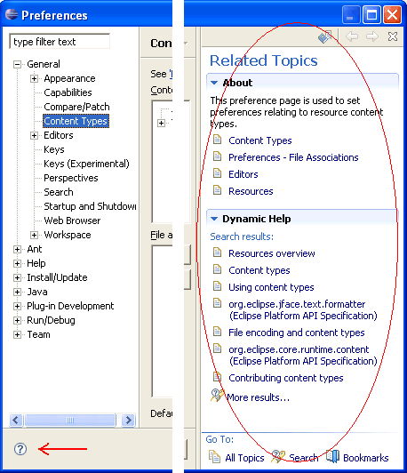
Direct text search action
Multiple search views

Open cheat sheet from a content file
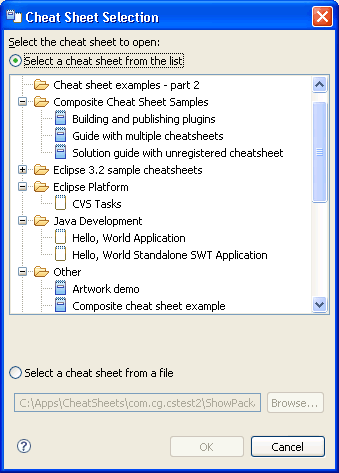
New look for welcome
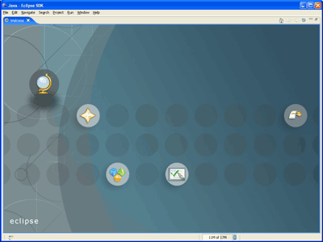
Live news in the Eclipse SDK Welcome
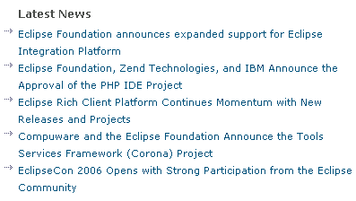
Animated message area for displaying errors and warnings
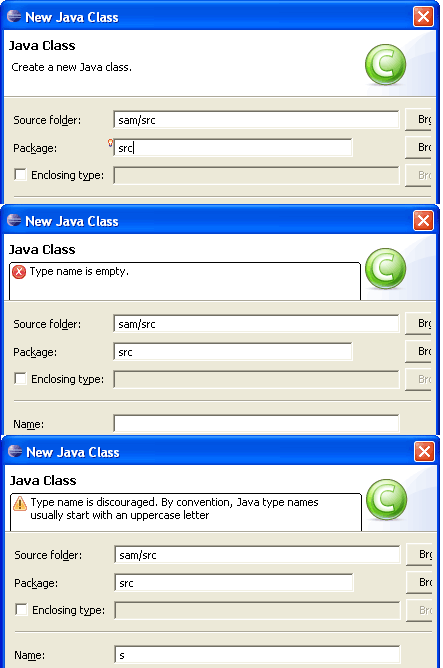
System Default theme
The System Default theme is a theme that uses fonts and colors available from the operating system rather than those defined by Eclipse.
This theme is the default theme for High Contrast mode. You will be prompted to restart when switching to High Contrast mode and the theme change will be applied then.
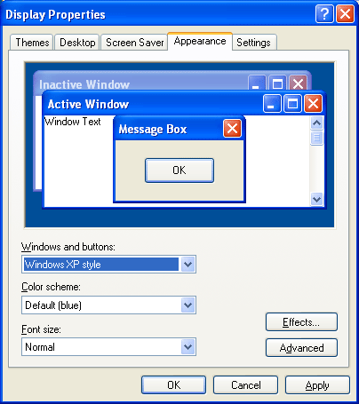
Tooltips for annotations in Text editors
Annotation hovering has been pushed down from JDT Text to Platform Text.
Text, vertical and overview ruler hover support is installed by TextSourceViewerConfiguration
which is used by text editors.

Annotation navigation in Text editors
Annotation navigation has been pushed down from JDT Text to Platform Text and is now available in all text editors.

Import Team Project Set improvements
Team Project Sets that are stored in the workspace can now be imported directly using the Import Project Set operation available in the context menu of any *.psf file.
Commit comment templates
You can specify templates for commit comments via the Team > CVS > Comment Templates preference page. The templates will appear in the commit dialog off the history drop down menu.
Improved patching support
Improvements have been made to the CVS Create Patch wizard.
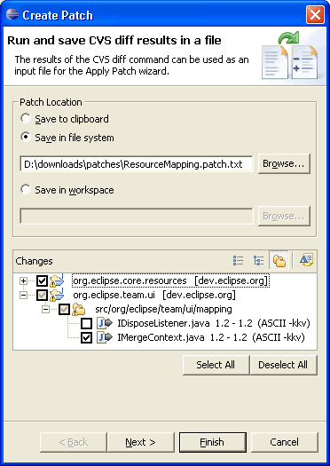
Improvements to create patch include:
- The ability to create a patch that contains changes from multiple projects (this uses an Eclipse specific patch format)
- The ability to save the patch to the clipboard, workspace or file-system.
- The ability to exclude files from the patch
Changes have been made to the Apply Patch wizard to accommodate multi-project patches.
Improved conflict handling for CVS Team>Update operation
When performing an update, CVS has a file based markup for indicating conflicts. This markup can be cumbersome to work with. When performing a Team>Update, Eclipse will now update any non-conflicting files and then show any conflicts in the synchronize view. You can then resolve the conflicts manually from there.
CVS shows model content in synchronizations
CVS can now be configured to include model content in synchronizations by enabling the associated option on the Team > CVS > Synchronize/Compare preference page.
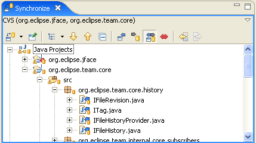
Expand All in CVS Repositories view
An Expand All menu action has been added to folders in the CVS Repositories view. This action will fetch the entire subtree in a single round trip and expand it in the view.
History view improvements
- The view can show the history for any selected element and not just files.
- When in Link mode, the view links to editor and view selection and updates the contents in the background to avoid blocking the UI.
- Pinning the view will cause it to lock on to the current history being displayed. Another History view will be opened if the history is requested for another file or object.
- The CVS History page includes the local history of files. Toolbar buttons can be used to control whether local, remote, or both histories should be visible.
- CVS Compare with and Replace with Revision operations all populate the History view. Actions have been added to the CVS History page to launch comparisons and replace contents.

Local and remote history operations combined for CVS projects
For projects mapped to CVS, the local history and CVS history operations in the Compare With and Replace With menus have now been combined into a single History operation.
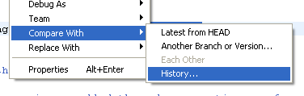
Date categories in CVS history
The history for a CVS file can now be categorized by date. Icons have also been added to help distinguish local changes from remote revisions.
Proxy support for CVS pserver connections
Proxy support is now available for CVS pserver connections.

CVS Quick Diff annotations
CVS now supports Quick Diff annotations for local files. Perform a Team > Show Annotations on a local file and you will see color-based annotations of who did what in the file. The bar on the left hand side shows a different color for each user. Hovering over a section shows the details of that revision and highlights the sections of code contributed by that revision in the right hand bar.
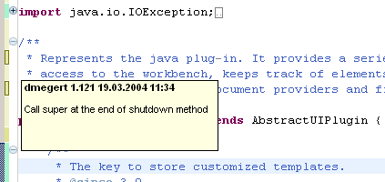
Ant launch configuration refactoring
Renaming buildfiles (or projects containing buildfiles) will correctly update the launch configurations associated with the buildfile.
Java problem markers from a "javac" build
Running an Ant build that contains a "javac" declaration can produce JDT problem markers for the code that is compiled. The marker generation is controlled by an Ant UI preference: Window > Preferences > Ant > Create problem markers from "javac" results. As well, the "javac" declaration needs to set the "listfiles" attribute to "true" and an Eclipse console must be allocated for the build output.
Breakpoint import and export
Breakpoints can now be exported to a file. The export wizard lets you select the breakpoints to export together; the import wizard lets you optionally create a breakpoint working set.
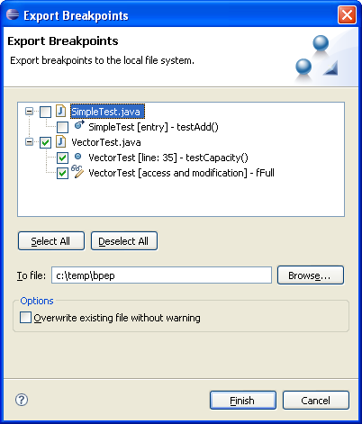
Launch dialog
A toolbar and name filter have been added to the launch dialog. The toolbar provides actions to create, duplicate, delete, and collapse all configurations, as well as manage the filters for the dialog. The name filter dynamically filters entries in the dialog as you type to show only those configurations matching the entered text, similar to the preferences dialog.
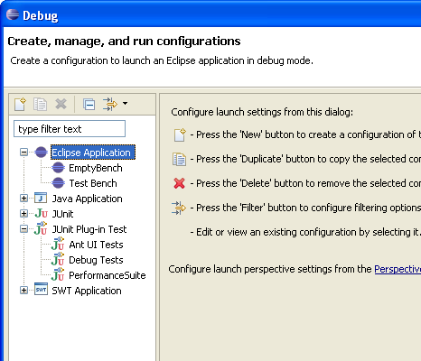
The launch dialog and launch history menu support a set of filters that can be configured on the Run/Debug > Launching > Launch Configurations preference page. You can filter configurations from closed, deleted, or unavailable projects. As well, you can filter specific kinds of configurations. The dialog and history menus optionally support the current workbench window working sets.
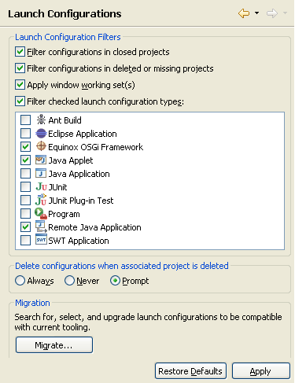
For resource based filtering to work, you need to migrate your existing launch configurations. This can be done by pressing the Migrate button on the preference page.
The filters are also available for easy access in a new toolbar in the launch dialog.
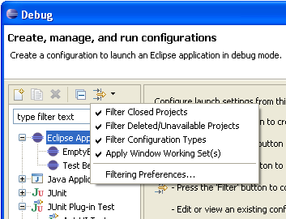
The perspective settings for running and debugging have been centralized on the Run/Debug > Perspectives preference page.
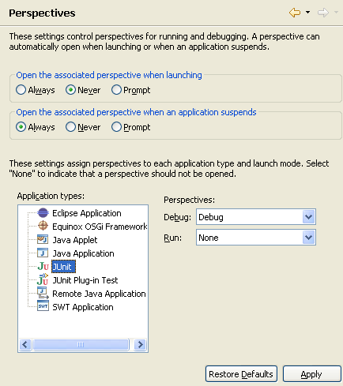
Variable columns
Variables can be displayed using columns or a standard tree. To toggle columns on/off use the view menu's Layout > Show Columns action. You can select the columns to be displayed using the Layout > Select Columns action. Recently changed variables are displayed with a yellow background (controlled by the "Changed value background color" user preference via the Run/Debug preference page). The Java debugger supports editing of Strings and primitive values inline.
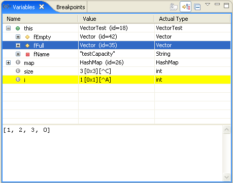